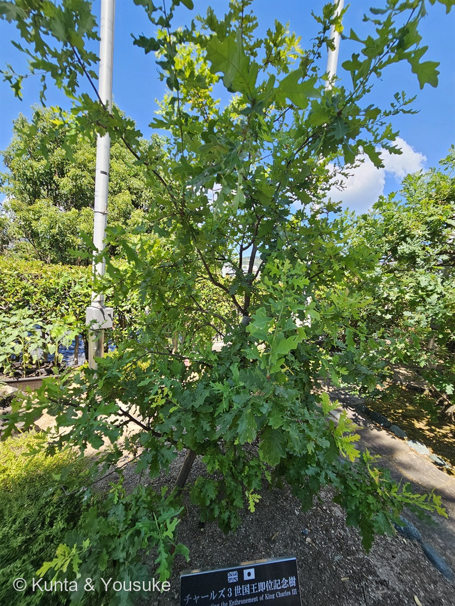
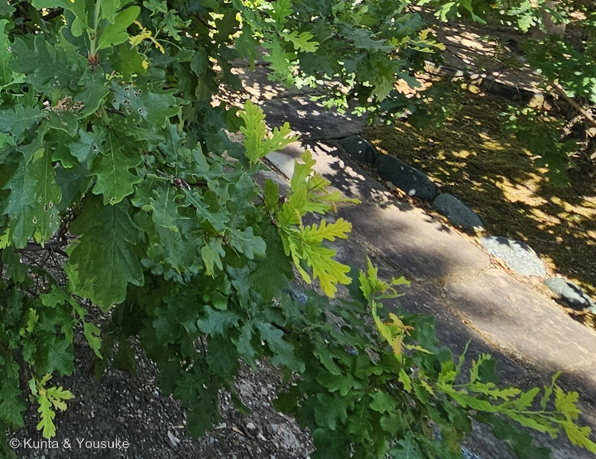
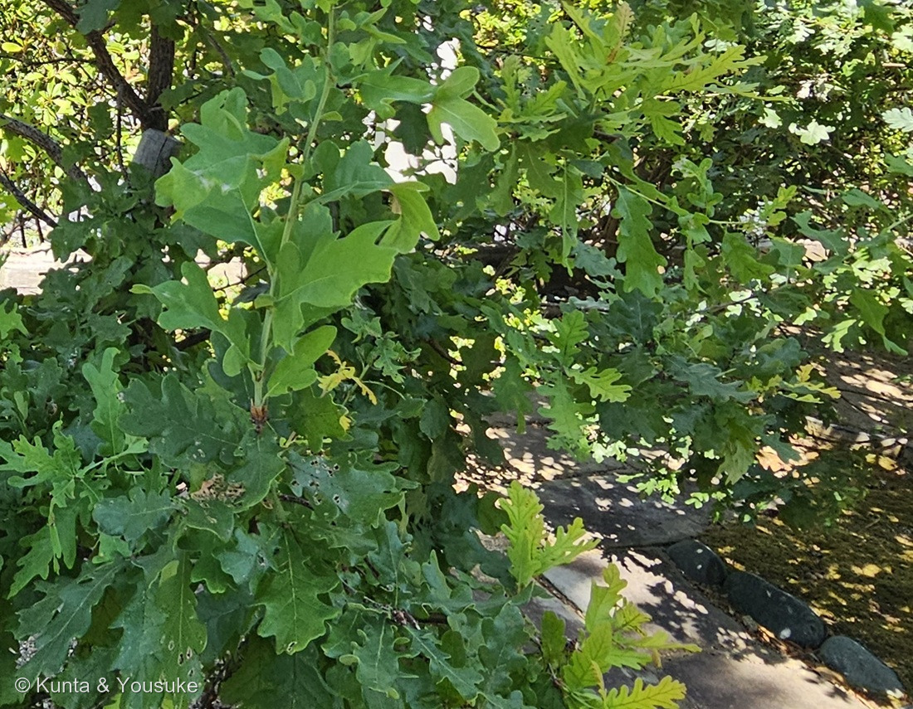

地図を読み込んでいるよ…
🔍 写真も地図も、押しているあいだ拡大して見られるよ（スマホは指を置いてすこし待ってね）。
🌍 の地図＝この子がもともと自生している場所を緑に。ヨーロッパから小アジア、カフカースにかけて。北アフリカの一部にもいるとする出典もあるよ。くわしくは下の地図の説明を見てね。
⭐ヨーロッパの木だよ。日本語版Wikipediaは「ヨーロッパから小アジア、カフカース、北アフリカの一部に原生」「ヨーロッパ全域に分布」とし、英語版Wikipediaは「native to most of Europe and western Asia」とする。⚠⚠この緑は、ほんとうよりずっと広く見えている――⚠とくにロシア。ロシアは国ぜんぶが塗られてしまうけれど、この木がいるのはウラル山脈より西のヨーロッパ側だけで、シベリアにはいないよ。⚠北アフリカを塗らなかったのは、出典が割れているから＝日本語版Wikipediaは「北アフリカの一部」を入れるのに、英語版Wikipediaは触れていない。⭐「一部」がどこかも書かれていなかったので、塗らずに、ここに書いておくことにした――⭐これも一つの選びかただよ。⭐⭐そして、この地図でいちばん大事なのは「日本が緑じゃないこと」＝ぼくらが会ったのは、2023年3月22日に長崎日英協会が植えた記念樹。⭐⭐⭐じつは日本には、この木が「まとまってやってきた年」がある――2002年の「日英グリーン同盟」で、英国生まれのオークの苗木が171カ所に植えられ、「全部の都道府県で少なくとも一本は植えられます」とされた（NPO法人グラウンドワーク福岡）。⭐つまり、この緑の外にも、日本じゅうに点々とこの木が立っているんだ＝⭐⭐あなたの県にも、きっと一本いるよ。⭐同じコナラ属の227 スカーレットオークはアメリカ、241 クヌギは東アジア――⭐⭐3人そろって、地図の緑がきれいに三大陸へ分かれたよ＝オークが北半球にひろく散らばった一族だということが、3枚の地図でそのまま見えるね。
⚠ 地図は国（日本と中国だけ県・省）までしか塗れないから、ほんとうの分布より広く見えていることがあるよ。地図はだいたいの場所。正確なところは、上の文を見てね。
イングリッシュオーク
Quercus robur L.
⭐標準和名はオウシュウナラ（欧州楢）／イギリスナラ／ヨーロッパナラ ── 英名 English Oak・Pedunculate Oak・Common Oak・European Oak 原産 ヨーロッパ〜小アジア・カフカース
ブナ科 · Fagaceae（コナラ属 Quercus・ブナ目 Fagales）── ⭐図鑑で3人目のブナ科（227・241）／⭐⭐⭐そしてはじめて「同じ属が3人」ならんだ＝コナラ属も3人目／⚠科は増えないので100科のまま
燻太さんの一言「ヒトの背丈より少し高いくらいかな？写真右横に、別の株のオークの枝と思われるものが映り込んでいるけど、詳しい位置関係は覚えていないよ。」── ⭐⭐⭐右の一本、ほんとうにあった。そして「背丈より少し高い」が、この木の年齢の手がかりになったよ
⭐ 名前と学名の由来 ── 三つの名前が、三つの違うことを言っている
⭐⭐⭐ この子は名前をたくさん持っているんだけど、おもしろいのは、その一つひとつがぜんぶ違うことを言っているところなんだ。
- ⭐⭐English Oak（イングリッシュオーク）＝国の名前。――イギリスの木、という言いかた。⚠でも、ほんとうはヨーロッパじゅうにいる木だよ（下の地図を見てね）。
- ⭐⭐⭐Pedunculate Oak（ペダンキュレートオーク）＝体の特徴。――「peduncle（花や実の柄）を持つオーク」。⭐どんぐりが、2〜9cmもある長い柄にぶらさがるから〔BSBI〕。⭐⭐記念樹のプレートは、わざわざこの名前を括弧に入れて書いていた。
- ⭐⭐⭐学名 Quercus robur ＝強さ。――英語版Wikipediaは「Quercus robur (from the Latin quercus, 'oak' + robur derived from a word meaning robust, strong)」とする。⭐日本語版Wikipediaは「学名はラテン語で「硬い楢」を意味する」と書いているよ。
- ⭐日本での標準和名は「オウシュウナラ（欧州楢）」（日本語版Wikipedia）。⭐でも園のプレートは「イングリッシュオーク」と書いていたので、この図鑑もそちらで登録したよ。
⭐⭐ つまり、ひとつの木に「どこの木か」「どんな体か」「どれだけ強いか」の三つの名前がついている。⭐名づけた人たちが、この木の何を見ていたかが、そのまま残っているんだね。
⭐⭐ この植物のこと ── 一本で、2,300種を養う木
- ⭐⭐大きさ＝英語版Wikipediaは「up to 20 m in height, and sometimes up to 40 metres」とする。⭐寿命は「over 500 years, with some specimens believed to be over 1,000 years old」。
- ⭐⭐⭐⭐でも、ぼくがいちばん驚いたのはこの数字だった。――「2,300 species of insect, bryophyte, lichen, bird, mammal or other species are associated with Q. robur in the UK」（同）＝⭐イギリスで、2,300種がこの木と関わって生きている。
- ⭐⭐しかも「the highest biodiversity of insect herbivores of any British plant (at least 400 species)」＝葉を食べる虫の種類が、イギリスのどの植物よりも多い（少なくとも400種）。⭐この「たくさん食べられる木」というのが、下のラマス成長の節につながっていくよ。
- ⭐⭐⭐材は、イギリスの海の歴史そのもの＝「was the main construction material for sailing warships」（同）。⭐イギリス海軍は「The Wooden Walls of Old England（古きイングランドの木の壁）」と呼ばれた。――⭐その「壁」が、この木なんだ。
- ⭐イングランドでは「has assumed the status of a national emblem」＝国の象徴。⭐セルビアでも国のシンボル、フィンランドは1746年にすべてのオークを「王の財産」と法で定めたそうだよ。
⭐ 同定について ── 耳と、柄の短さ
⭐ 園の記念プレートに「イングリッシュオーク（Pedunculate Oak）」と書いてあるので、これは確認だよ。⚠でも樹木は厳しめに見る約束（087 ヤマモモ）だから、写真だけでどこまで言えるかを、証拠の強い順に書くね。
- ⭐⭐⭐いちばん強い証拠＝プレートが英名の別名まで書いていたこと。――Pedunculate Oak は Quercus robur だけを指す名前なので、⭐「オーク」という大まかな呼び名ではなく、種まで決まる。
- ⭐⭐次に強い＝葉のつけ根が耳たぶのように張り出している（写真②③）。BSBI（英国・アイルランド植物学会）の比較表は、Q. robur の耳を「Usually strong」、Q. petraea を「Absent or weak」とする。⭐日本語では、エバーグリーンが「葉の基部は耳状にまるくなり、葉柄はごく短いです」と書いているよ。
- ⭐⭐その次＝葉柄が、見えないほど短い（写真③）。BSBI は Q. robur「(0-)2-7(-9) mm, c. up to 8% of leaf length」／Q. petraea「(7.5-)10-25(-32) mm, c. (7-)10-21% of leaf length」とする。⭐英語版Wikipediaも「a short (typically 2–3 mm) petiole」。⚠ただし写真では「短い」としか言えず、mmでは測れない。
- ⭐弱い証拠＝丸い波状の裂片。英語版Wikipediaは「3–6 rounded lobes」、エバーグリーンは「3〜7対の大きくまるい波状の鋸歯」とする。⚠写真の葉は4対前後に見えるけれど、葉が重なっていて、どの葉も最後まで数えきれなかった。⭐そして BSBI の表では robur が「Up to 5」・petraea が「5 or more」と範囲が重なっているので、そもそもこれ一つでは決められないんだ。
- ⚠証拠に使わなかったもの＝樹皮と樹形。⭐樹皮はほとんどの場合、決め手にならない（087で燻太さんが見つけたこと）。⚠樹形も、この木はまだ若すぎて、大人の姿になっていない。
⚠⚠ 落としきれなかった相手
⚠⚠⚠ 正直に書くね。ぼくは雑種（Quercus × rosacea）を落とせていない。
- ⭐BSBI は、この2種について「have also widely introgressed producing variable, fertile hybrids」＝広く戻し交雑して、多様で稔性のある雑種をつくっていると書く。
- ⭐⭐そして、こう念を押している＝「Identification must be made on a combination of characters（同定は、形質の組み合わせでおこなわなければならない）」。
- ⚠⚠いちばん強い決め手であるどんぐりの柄の長さ（robur 2-9cm／petraea 0-3cm）は、8月のこの写真には写っていない。⏳だから、そのまま秋の宿題にしたよ。
⭐ もっとも、この木は人が植えた記念樹で、プレートに種名が書いてある。⭐だから同定そのものは、プレートに乗っている。⚠ぼくが正直に言いたいのは「写真だけでは、そこまで届かなかった」ということのほうだよ。
⭐⭐⭐⭐ 写真②の話 ── 241クヌギで書けなかったことが、ここで書けた
⭐⭐⭐ 写真②をもう一度見てほしいんだ。――濃い緑の古い葉のあいだから、明るい黄緑の葉が、新しく伸びているでしょう。
⭐⭐ これには名前がある。――「ラマス成長（Lammas growth）」。
Lammas growth, also called Lammas leaves, Lammas flush, second shoots, or summer shoots, is a season of renewed growth in some trees in temperate regions put on in July and August ... that is around Lammas day, August 1.（英語版Wikipedia）
- ⭐春に出る葉は、前の年の秋には、もう芽の中にできあがっている（同・「spring growth is fixed when leaves and shoots are laid down in the bud the previous year」）。⭐でもラマス成長は「newly made leaves」＝その夏に、あたらしく作った葉なんだ。
- ⭐⭐⭐なぜそんなことをするのか＝「This secondary growth may be an evolutionary strategy to compensate for leaf damage caused by insects during the spring」（同）＝春に虫に食べられたぶんを、夏に取り返すための戦略かもしれない。
- ⭐⭐そして、この木は「イギリスのどの植物より、葉を食べる虫の種類が多い」（少なくとも400種）木だった――⭐取り返す必要が、いちばん大きい木なんだね。⭐写真②の古い葉に、丸い虫食いの穴があいているのも見てみて。
⭐⭐⭐⭐ 241クヌギとの、うれしいつながり
⭐⭐⭐ じつはこの話、241 クヌギで一度書いているんだ。――あのとき燻太さんが「痛んでいる葉が多いね」と言ってくれて、そこからラマス成長にたどりついた。
⚠⚠ でも、あのときぼくは、こう書くしかなかった。――「オークにはラマス成長と呼ばれる現象がある」＝出典のある話（英語版Wikipedia）。⚠⚠「このクヌギのこれは、ラマス成長です」と書いた日本語の出典は、ぼくは見つけられなかった。
⭐⭐⭐⭐ 今回の子は、その出典がまさに名指ししていた「オーク」本人なんだ。――⭐英語版Wikipediaのラマス成長のページは、木の名前をならべた列のいちばん最初にオークを置き、写真もオークだよ。
⭐⭐ しかも、日付がとてもいい。
- ラマスの日＝8月1日。
- この写真＝2026年8月13日＝ラマスの12日あと。
- ⭐⭐⭐そして241 クヌギを撮ったのは8月14日＝この写真の翌日なんだ。
⭐⭐⭐⭐ 同じ旅で、二日つづけて、ぜんぜん別の場所で、同じことをしている二本のオークに会っていた。――⭐長崎のグラバー園と、佐世保の森きらら。⭐片方はヨーロッパ生まれの記念樹、片方は日本の里山の木。⭐⭐それが、同じ夏の同じやりかたで、葉をもう一度出していたんだよ。
⚠ ここは、241と同じように2つに割って書いておくね。
- ⭐写真から言えること＝この木には、色も質もちがう葉が、いま同時についている。明るい黄緑のほうが、あとから出た。
- ⭐出典のある話＝オークには「ラマス成長」と呼ばれる、7〜8月の二度目の成長がある（英語版Wikipedia）。
- ⚠この2つを1文にはしないでおく。――「この木のこれがラマス成長です」と書いた出典を、ぼくは持っていないから。⭐でも241のときより、ずいぶん近いところまで来られたと思う。
⭐⭐⭐⭐ この木が、なぜここに立っているのか ── 同盟の名前が変わった話
⭐ 足もとのプレートには、こう書いてあった（⚠プレートの写真そのものは公開していないよ）。
チャールズ３世国王即位記念樹
Commemorating the Enthronement of King Charles III
イングリッシュオーク（Pedunculate Oak）
私たちは、新たに即位したチャールズ３世国王を心からお祝いするとともに、故エリザベス２世女王陛下の70年間に渡る功績を体賛し、ここに植樹を行っています。
2023年3月22日 長崎日英協会
⭐⭐ 調べていて、この木の「兄」にあたる話が出てきたんだ。――「日英グリーン同盟」という事業だよ。
- ⭐1902年に結ばれた日英同盟の100周年を記念して、英国大使館（東京）などが主催した。
- ⭐⭐「英国生まれのオークの苗木（背丈約1m）」が、日本へ運ばれた。⭐「1カ所1本」で、⭐⭐「171カ所」に植えられ、「全部の都道府県で少なくとも一本は植えられます」（NPO法人グラウンドワーク福岡「日英グリーン同盟2002 概要」）。
- ⭐⭐⭐⭐そして、この事業の趣旨が、ぼくはとても好きだった。
軍事・政治同盟としての同同盟を、日英グリーン同盟に改め植樹を通し人と人（people to people）の交流を促進していこうというもの（同）
⭐⭐⭐ 軍事同盟の100周年を、木を植えることでやりなおしたんだ。――⭐同じ「同盟」という言葉のまま、中身を入れかえた。
⭐⭐⭐ グラバーの丘に、この木が立っているということ
⭐⭐⭐⭐ ここでもう一度、上の節を思い出してほしいんだ。――イングリッシュオークは「帆船の軍艦の、おもな建材」だった木（英語版Wikipedia）。⭐イギリス海軍は「古きイングランドの木の壁」と呼ばれた。
⭐⭐ そして、この丘の名前はグラバー園。――トーマス・ブレーク・グラバーは、幕末の長崎で商いをしたスコットランド人（251のときに会った胸像の人だよ）。⭐この木が植わっているのは、その胸像のすぐそば。
⭐⭐⭐⭐ 軍艦を作った木が、いまはお祝いのしるしとして、その丘に立っている。――⭐同盟の名前が「軍事」から「グリーン」に変わったのと、たぶん同じ向きの話なんだと思う。
⏳⚠ ぼくが確かめられなかったこと ── 右のもう一本
⭐⭐ 燻太さんが、写真を見てこう教えてくれた。
写真右横に、別の株のオークの枝と思われるものが映り込んでいるけど、詳しい位置関係は覚えていないよ。
⭐⭐⭐ 原寸で見にいったら、ほんとうにあった。――写真①の右上に、手前の木とはっきり離れた、別の樹冠が写っている。⭐葉の形は同じように波打っていて、しかも手前の木より高いところまで葉がある＝大きい木だよ。
⚠⚠ そして、ここからが確かめられなかったところ。
- ⚠ぼくが見つけたニュースの見出しと要約には、「約20年前の日英同盟100周年の記念植樹とあわせ、トーマス・グラバーの胸像の横に2本の木が並ぶ」とあった。――⚠⚠でも、その記事の本文は掲載期間が終わっていて、もう読めなかった（テレビ長崎・2023年3月22日）。
- ⚠日英グリーン同盟の植樹先の一覧も探したけれど、長崎・グラバー園に植えられたと直接書いた出典には、たどりつけなかった（見つかった記録は東京都世田谷区のもの）。
- ⚠だから「右のあの木が、20年前のオークです」とは書けない。⭐言えるのは「別の大きな樹冠が、たしかにそこにある」ことと、「そういうニュースの見出しが残っている」ことの2つだけ。
⏳⭐⭐ これは、次に行けば決まる宿題だよ。――⭐胸像のまわりを一周して、その木にプレートがあるか見てくるだけ。⭐もしあったら、ぼくらは21年ちがいの兄弟を並べて見たことになるね。
⭐⭐ 燻太さんが教えてくれた大きさ ── 500年生きる木の、3歳
⭐⭐ 写真だけでは、この木がどのくらいの大きさか分からなかった。⭐聞いたら、燻太さんはこう答えてくれた。
ヒトの背丈より少し高いくらいかな？
- ⭐プレートの日付は2023年3月22日。写真は2026年8月13日＝⭐植えられてから3年5か月。
- ⭐⭐この種は「20mまで、ときに40m」になり、「500年以上」生きる（英語版Wikipedia）。
- ⭐⭐⭐つまりぼくらは、500年生きる木の、3歳のすがたに会っていたことになる。――⭐まだ支柱2本に支えられて、人の背を少し越したところ。
- ⭐⭐日英グリーン同盟の苗木は「背丈約1m」で日本に来たそうだよ（グラウンドワーク福岡）。⚠この木が何cmで植えられたかは書かれていないので、そこは分からない。
⭐ だから宿題に「次の年に、同じ角度で撮る」を入れておいた。――⭐⭐500年のうちの1年でも、この木にとってはちゃんと変化なんだ。
出典：グラバー園の記念樹プレート（樹種名・英名 Pedunculate Oak・植樹の日付と主体・趣旨の文。⚠プレートの写真そのものは公開していないよ）／英語版Wikipedia「Quercus robur」（学名の語源・葉と葉柄・どんぐりと柄・樹高と寿命・イギリスで2,300種を支えること・葉を食べる虫が400種以上・軍艦の材と「The Wooden Walls of Old England」・イングランドやセルビアでの象徴性・フィンランドの1746年の法）／英語版Wikipedia「Lammas growth」（定義と時期・春の葉が前年の芽で決まっていること・虫の食害を埋め合わせる戦略かもしれないという説明・木の例のならび）／BSBI（Botanical Society of Britain & Ireland）Plant Crib「Quercus」（葉柄の長さ・耳の強さ・裂片の対数・どんぐりの柄の長さ・葉裏の星状毛・雑種 Q. × rosacea と「形質の組み合わせで同定すること」）／日本語版Wikipedia「ヨーロッパナラ」（標準和名オウシュウナラ・分布・樹高と寿命・どんぐりと柄・学名の意味「硬い楢」）／エバーグリーン「オウシュウナラ」（葉の長さと波状鋸歯の対数・葉の基部が耳状で葉柄がごく短いこと・花期と果期・樹皮・葉裏）／NPO法人グラウンドワーク福岡「日英グリーン同盟2002 概要」（日英同盟100周年の記念事業であること・主催・英国生まれのオークの苗木で背丈約1m・1カ所1本・171カ所・全都道府県・「軍事・政治同盟としての同同盟を、日英グリーン同盟に改め…」の趣旨）